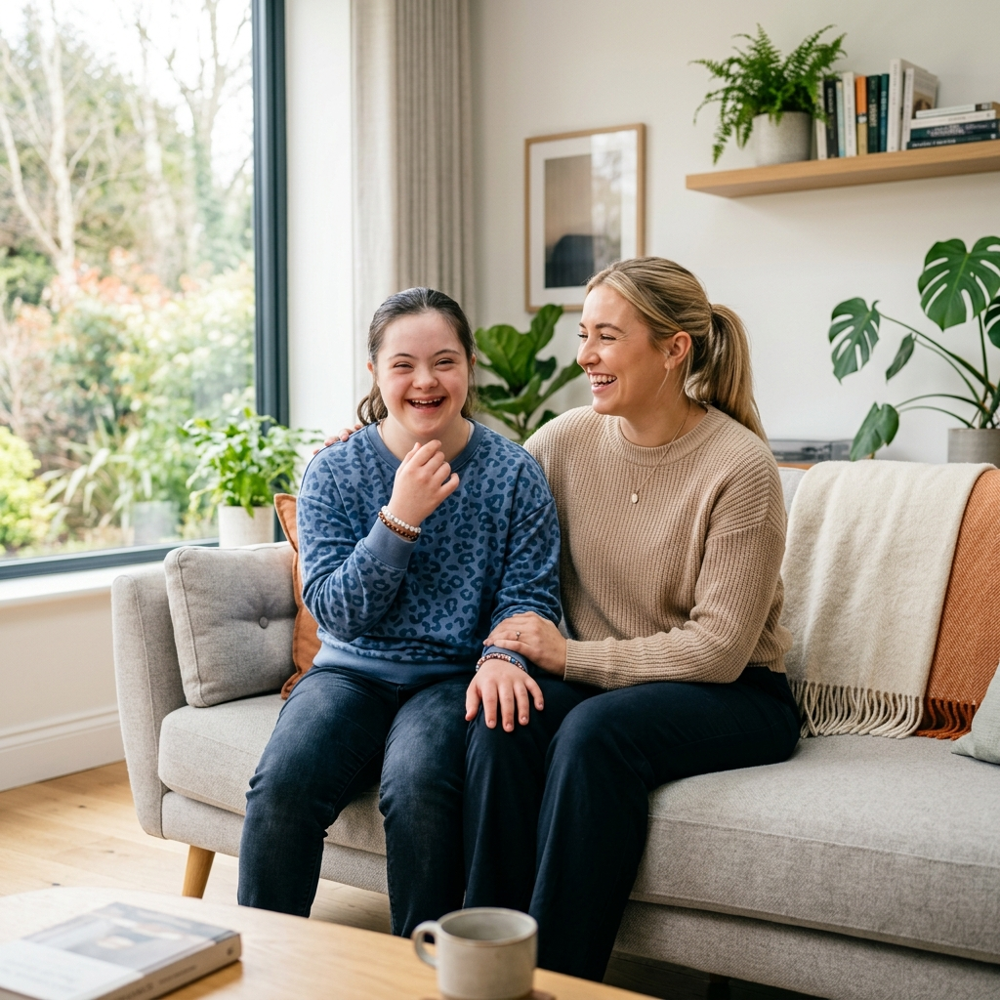
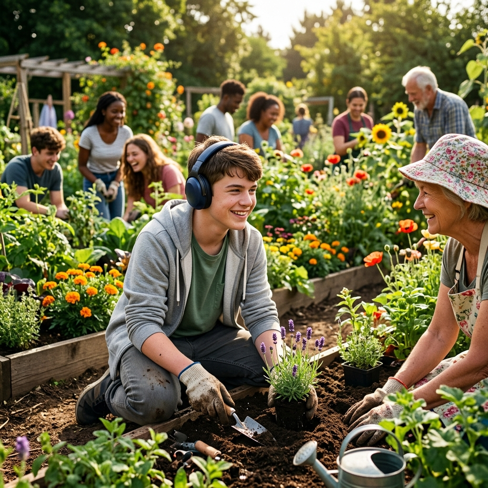

About Care Solutions Hub
Care built on dignity, choice and community.
Care Solutions Hub is committed to delivering exceptional domiciliary care for individuals with learning disabilities and autism. Our core focus is to empower individuals to lead fulfilling lives, supporting their independence and well-being in their own homes.
Two rights sit at the centre of everything we do
We believe in the fundamental rights of dignity and self-direction. Care Solutions Hub ensures that all care provided aligns with these principles, fostering a genuinely person-centred approach.
The Right to Self-Direction
Empowering individuals to make their own choices and decisions about their care, their home, and their day.
The Right to Strive for Happiness
Supporting each person in pursuing a fulfilling and meaningful life, defined on their own terms.


Restoring community presence, one relationship at a time
We are dedicated to maintaining and restoring community presence for individuals with autism and learning disabilities. Too often, exclusion occurs due to a lack of skilled, person-centred support. Our experienced leadership team is committed to reversing this trend by building strong, capable support networks that empower individuals to thrive within their communities.
- Live independently in a home that's genuinely theirs.
- Safely access and engage with their community.
- Achieve personal goals while staying connected to the people and places that matter most.
Three groups. One shared standard of care.
To the People We Support
We listen to your needs and support you in the way that best suits you. We respect your choices and help you stay connected with the people who matter most to you, including your family.
Supporting Families
Family members and loved ones are always welcomed and actively involved in the care process, working alongside us as part of the support team — through easy and challenging times alike.
Empowering Professionals
We provide a skilled and dedicated workforce focused on delivering person-centred support, continually improving to meet the unique needs of every individual.
What you can expect from every visit
Join us in making a difference
Together, we can create an environment where everyone has the opportunity to live life with dignity and independence.